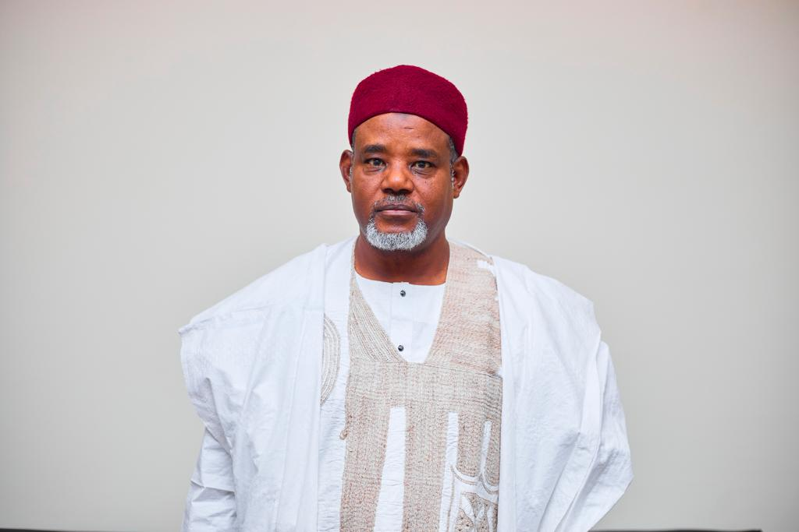
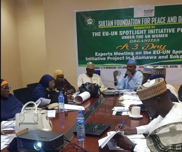
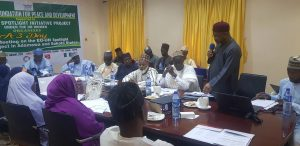
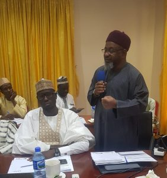
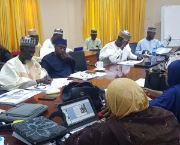
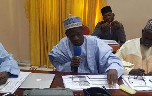

THE FOUNDATION
The sultan foundation for peace and Development (SFPD) is a private,non-profit and non-governmental organization concerned with peace and development.
The Organization was established in Nigeria in November 2014, with the aim of promoting development,peaceful co-existence,tolerance,better understanding of Islam and provision of humanitarian aid to the needy and the vulnerable in Nigeria.
The headquarters of the Organization is situated in Kaduna Northern Nigeria. It has established relationships and cooperation with a number of institutions and organizations in Nigeria and outside it. The Foundation’s Board of Trustees is made up of eminent citizens and is chaired by His Eminence the Sultan of Sokoto ,Alhaji Muhammad Sa’ad Abubakar CFR mni.
.jpg)
ALHAJI MUHAMMAD SA'AD ABUBAKAR CFR,mni
Sultan of Sokoto (Grand Patron)
PROVISION OF LOGISTICS FOR MOBILIZATION AND OPERATIONAL SUPPORT TO TRADITIONAL LEADERS
TRUSTED BY THE BIGGEST NON-PROFITS ORGANIZATION IN NIGERIA.
SULTAN FOUNDATION HAS BEEN PRESENT FOR YEARS. WE MAKE THE BEST FOR ALL.
MALLAM AMINU MUHAMMAD INUWA(Sectery)
PREVIOUS EVENT
3-Days Expert Meeting on The EU-UN spotlight Initiative Project in Adamawa And Sokoto States.
MALLAN AMINU INUWA (DIRECTOR OF PROGRAMS), GIVES A WELCOMING REMARK AND INTRODUCTION OF ULAMA/PARTICIPANTS AS FOLLOWS:
1) Dr Bashir Aliyu Umar Director Centre for Islamic Civilization and Interfaith Dialogue,Bayero University, Kano,2) Prof Aisha Abdul-Ismail Director Centre for Gender Studies Bayero University, Kano,3) Dr Ibrahim Liman Sifawa, Al-Ihsan College of Advanced Studies Sifawa, Bodinga Sokoto,4) Dr Mansur Ibrahim Centre for Islamic Legal Studies Usmanu Danfodiyo University,Sokoto, 5) Mal Aminu Aliyu Gusau, Modibbon Gusau,Naibul Mudir, JTI Zamfara State,6) Dr Ibrahim Disina Director General Sunnah TV & Member, Board of Trustees Sultan Foundation for Peace and Development,7) Dr Bashir Imam Ali Department of Islamic Studies School for Secondary Education; Arts & Social Sciences Programmes Federal College of Education, Yola,8) Dr Salisu Ismail (IMAN)Department of Cardio-thoracic Surgery Usmanu Danfodiyo University Teaching Hospital Sokoto,9) Dr Yalwa Usman,Coordinator, Reproductive Health Unit,Department of Obstetrics & Gynaecology,Maitama Hospital, Abuja,10) Mal Ibrahim Barkindo Centre for Islamic Legal Studies Ahmadu Bello University, Zaria, 11) Dr Fatima Binta Musa Government Girls College Sokoto.
INTRODUCTION TO THE EU-UN SPOTLIGHT INITIATIVE PROJECT AND THE EU-UN SPOTLIGHT INITIATIVE PROJECT TERMS OF REFRENCES FOR SFPD BY M.A INUWA
SPOTLIGHT FOCUS IN AFRICA: Eliminate sexual and gender-based violence (SGBV), harmful practices (HPs), and address related aspects of sexual and reproductive health and rights (SRHRs). FUNDING ALLOCATION FOR AFRICA: 250million pounds 8 PRIORITY COUNTRIES: NIGERIA, LIBERIA, NIGER, MALAWI, MOZAMBIQUE, ZIMBABWA, UGANDA AND MALI WILL ALSO CONTAIN A REGIONAL COMPONENT OVERALL VISION & APPROACH IN NIGERIA A COMPREHENSIVE APPROACH: SIX PILLARS A Nigeria where all women and girls are free from violence and harmful practices LAWS AND POLICIES INSTITUTIONS PREVENTION SERVICES DATA
MEDICAL AND PSYCHOSOSICAL EFFECTS OF SEXUAL GENDER-BASED VIOLENCE AND HARMFUL PRACTICES AND UNDERSTANDING THE CONCEPTS OF SEXUAL AND REPRODUCTIVE HEALTH RIGHTS (SPHR) BY DR. YALWA USMAN
DEFINATION OF GENDER BASED-VIOLENCE (GBV) GEOGRAPHICAL SPREAD OF GBV TYPES OF GBV PREVALANCE OF GBV CAUSES OF GBV CONSEQUENCES OF SEXUAL, GBV AND HARMFUL PRACTICES (Medical/Psychological) SEXUAL AND REPRODUCTIVE HEALTH AND RIGHTS RECOMMENDATIONS TO
CLOSING PRAYERS DR IBRAHIM M LIMAN
OBJECTIVES
1.Promote education, research, resource development and scholarship for human development and social progress.
2.Develop the capacity of the Ulama (Islamic Scholars) to understand and preach moderation in order to counter extremism and terrorism;
3.Support relief and welfare of vulnerable groups especially widows, orphans and the sick through local Muslim charities.
STRUCTURE
The Foundation has a Board of Patrons and that of Trustees. a Central Working Committee as well as a Management Committee.The Foundation’s two boards are made up of eminent traditional and religious leaders from across the country and are chaired by His Eminence the Sultan of Sokoto Alhaji Muhammad Sa’ad Abubakar CFR mni. while the Central Working and Management Committees are chaired by His Highness Emir of Argungu Alhaji Samaila Muhammad Mera CON.
WORKING PARTNERS
In furtherance of its objectives especially as they relate to health. education. conflict resolution and peace building. the Foundation has established relationships and cooperation with a number of institutions and organizations in Nigeria and outside of it. Besides partnerships with Islamic Organizations that are already represented in the Central Working Committee.
It is working in partnership with the following organizations:
- UNICEF
- IIPC
- UNFPA
- BILL MELINDA GATES FOUNDATION
- FORUM FOR PROMOTING PEACE